How 是疑问词里最能延伸的一个 —— 它后面接一个词，问的东西就完全不同：how long 问时长、how often 问频率、how much 问价钱、how many 问数量、how come 问原因。这一课 15 句陈述里藏着七种不同的 How 问法，选错就等于问错。而且 how 单独用的时候，问的是「方式」或「状态」，这两种最容易被忽略。
课本 p.98–101
15 个陈述句 + 1 个例题
How 的七种延伸
01先把造问句的骨架搭好
造 How 问句和造 What 问句的顺序不同：先判断它在问哪一类信息（时长？频率？数量？方式？），再决定 How 后面接什么词。
判断信息类型 — 原句给的是数字、时长、还是方式"three times a day" → 频率 → how often；"two hours" → 时长 → how long。
选 How + 词 — 这是这一课的核心决定how long / how often / how much / how many / how come / how
配助动词 — 和第 17 课一样have been living → how long have you been living…?
最快的一步：看原句里那个数字。
有 times a day → how often；有 two hours → how long；有 20 bucks → how much；有 two books → how many。
原句给了什么数字，就问什么数字，这是这一课最省力的策略。
02How 的七种延伸，选错就问错
这一课 15 句陈述用到了七种 How 问法。先认全，再逐题准备。选错的后果比语法错误更严重 —— 对方会答出一个完全无关的答案。
A · 七种 How 对照表
问法
问什么
课本题号
例子
How long…?
时长（持续多久 / 花多长时间）
1、9
How long have you been living here? / How long does it take?
How often…?
频率（多久一次）
3、4、10、12
How often do you call your parents?
How many / much…?
数量 / 价钱
6、13
How many close friends do you have? / How much were they?
How + be + 主语…?
状态、感受（怎么样）
5、15
How was your trip? / How do you feel now?
How did you…?
方式、经过（怎么做到的）
7、8、11
How did you spend the weekend? / How did you meet her?
How come…?
原因（怎么会）—— 口语，很随意
14
How come you started smoking?
How + 形容词…?
程度（多高、多远、多贵）
（可延伸）
How far is it? / How old are you?
How long 有两个意思，别混。 ① 持续时间：How long have you lived here?（你在这住多久了）
② 所需时间：How long does it take?（要花多长时间）
两个都用 how long，但一个接 have done，一个接 does it take。第 1 题和第 9 题正好各占一个。
B · How come 的特殊之处（第 14 题）
第 14 题是 My friends who smoked looked cool to me and they "recommended" it to me. —— 这句话在解释「我怎么开始抽烟的」。问原因可以用三个说法，语气差很多。
说法
语气
语法
How did you start smoking?
中性，问经过
正常疑问句，did + 原形
Why did you start?
中性，问原因
正常疑问句
How come you started smoking?
口语、带一点惊讶
陈述语序！不倒装：how come you started，不是 how come did you start
How come 后面绝不倒装。
这和第 16 课的 I wonder if 是同一个坑：
✗ How come did you start smoking? ✓ How come you started smoking? 记法：how come 相当于 why is it that…，后面直接跟一句话。
C · 数量题的 how many 还是 how much
后面接
本课例子
How many…?
可数复数
How many close friends do you have?
How much…?
不可数（钱、时间、水）
How much were the camera and the bag?
How much is it?
问「多少钱」，固定说法
How much is that?
第 13 题有个特别的词：apiece。20 bucks apiece = 每个 20 美元。apiece 的意思是「每个」。
所以这题的正确问法是 How much were they apiece? 或更自然 How much each?
——注意它问的是单价，不是总价。
03课本例题：一段描述，一个问句
例题的陈述句很长 —— 三句话讲了「请朋友回家、妈妈做饭和蛋糕、朋友送书和电影票」。课本只给了一个问句，但它一句话把整段概括了：How do you usually celebrate your birthday?
Example
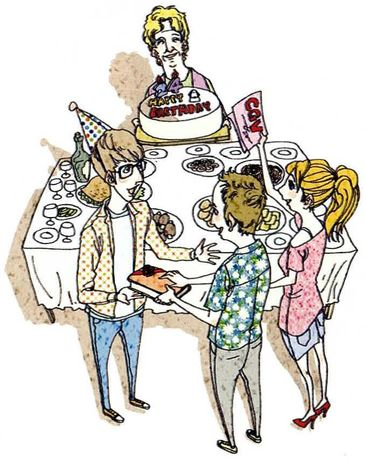
I usually invite my friends home, and Mom prepares food and a special cake for us. /ˈseləbreɪt/
The statementI usually invite my friends home, and Mom prepares food and a special cake for us. And my friends always give me books or movie tickets as presents.
What to ask about课本脚注：celebrate = 为表示某场合特殊而做愉快的事。这三句都是「某件事怎么做」的细节，所以问整体做法。
Questions you can ask①How do you usually celebrate your birthday? ②How many people usually come? ③Who does the cooking?
这题最有价值的技巧：celebrate 这个词。
中文说「过生日」，英语要用 celebrate a birthday —— 动词是 celebrate，不是 have 或 pass。
课本用了一个单词就把「请客、做饭、送礼」三件事概括了，这正是 How 问句的威力：它问的是一整套做法。
「过生日」不要说 pass my birthday 或 have my birthday。have a birthday 只在「有没有生日」这种罕见语境里用。日常一律 celebrate：
How do you celebrate your birthday? / I celebrated at home with my family.
04十五个陈述句：怎么问出好问题
每张卡三段：The statement 课本原句，What to ask about 说清这是哪一类 How、为什么选这个词，Questions you can ask 给三个问句。
01
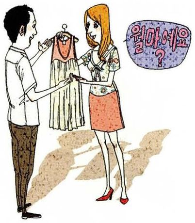
I've been living here in Korea for two years.
The statementI've been living here in Korea for two years.
What to ask about「for two years」是时长 → how long。原句用现在完成进行时 → 问句也用 have you been living。
Questions you can ask①How long have you been living in Korea? ②How long have you been there? ③How do you like it so far?
02
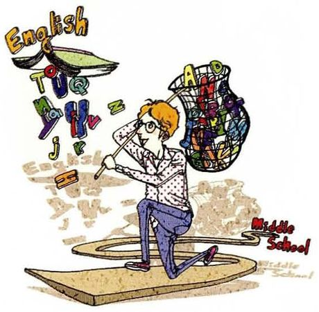
I've been studying English since middle school.
The statementI've been studying English since middle school.
What to ask about「since middle school」是起点，问「从什么时候开始」→ how long 或 since when。注意 since 和 for 的区别。
Questions you can ask①How long have you been studying English? ②How has your English improved since then? ③How do you keep it up now?
03
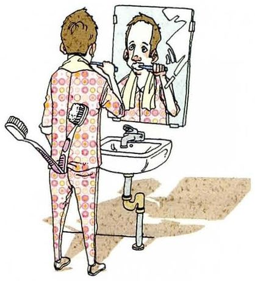
I brush my teeth three times a day.
The statementI brush my teeth three times a day.
What to ask about「three times a day」是频率 → how often。一般现在时 → 用 do。
Questions you can ask①How often do you brush your teeth? ②How many times a day do you brush them? ③How long do you spend on it each time?
04
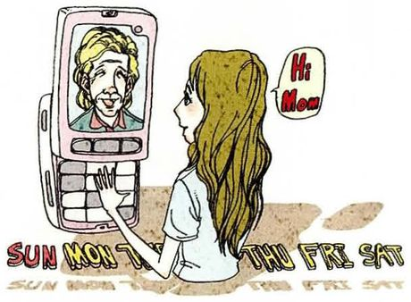
I call my parents once a week.
The statementI call my parents once a week.
What to ask about「once a week」是频率 → how often。也可延伸问「聊多久」，那是 how long。
Questions you can ask①How often do you call your parents? ②How long do you usually talk? ③How do you usually keep in touch with them?
05
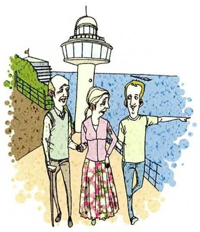
My trip was great. I visited my grandparents in Busan and enjoyed walking on Taejongdae beach.
The statementMy trip was great. I visited my grandparents in Busan and enjoyed walking on Taejongdae beach.
What to ask about「was great」是评价、状态 → 直接用 how was 倒装。这是最简单的 how 用法，也最容易被忘。
Questions you can ask①How was your trip? ②How did you spend the time there? ③How did you like the beach?
06
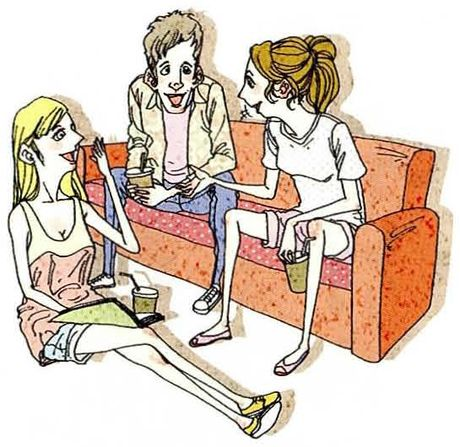
I have two close friends.
The statementI have two close friends.
What to ask about「two」是可数数量 → how many。注意 close friends = 密友，不是「亲密关系的朋友」。
Questions you can ask①How many close friends do you have? ②How long have you known them? ③How often do you see them?
07
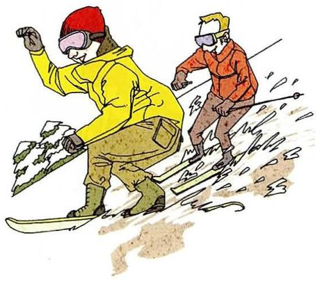
We rented a condo for the weekend and spent all day on the slopes.
The statementWe rented a condo for the weekend and spent all day on the slopes.
What to ask about课本脚注：slope = 滑雪用的坡道。这是「怎么度过」→ how did you spend。
Questions you can ask①How did you spend the weekend? ②How was the skiing? ③How much did the condo cost?
08
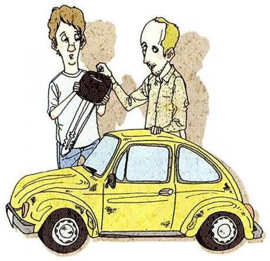
It is a used car, so my friend gave it to me.
The statementIt is a used car, so my friend gave it to me.
What to ask about这是「怎么得到的」→ how did you get。used car = 二手车（美式），英式说 second-hand car。
Questions you can ask①How did you get the car? ②How much did you pay for it? ③How old is it?
09
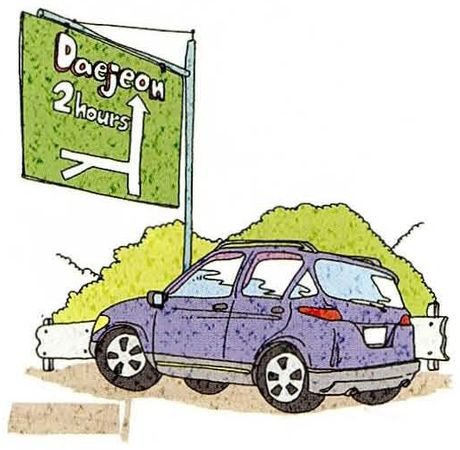
It takes two hours by car from here to Daejeon.
The statementIt takes two hours by car from here to Daejeon.
What to ask about「takes two hours」是所需时间 → how long does it take。这是 how long 的第二个意思，和第 1 题不同。
Questions you can ask①How long does it take to get to Daejeon? ②How far is it? ③How do you usually get there?
10
I usually read two books a month.
The statementI usually read two books a month.
What to ask about「two books a month」既是数量又是频率 —— 可以问 how often（多久读一本），也可以问 how many（一个月几本）。
Questions you can ask①How many books do you read a month? ②How often do you read? ③How do you find the time?
11
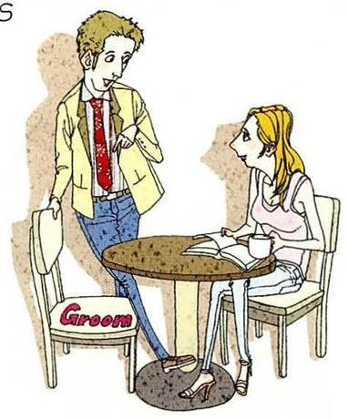
I was supposed to meet a friend at a coffee shop, but it was very crowded. So the waitress had me sit at a table with a girl. That's how I met my wife!
The statementI was supposed to meet a friend… So the waitress had me sit at a table with a girl. That's how I met my wife!
What to ask about这是「怎么认识的」→ how did you meet。原句最后一句 That's how… 已经暗示了问句的形式。
Questions you can ask①How did you meet your wife? ②How did that happen? ③How long were you together before you married?
12
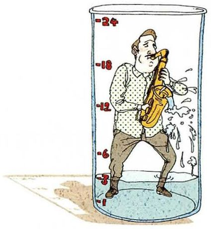
I practice at least three hours a day.
The statementI practice at least three hours a day.
What to ask about「three hours a day」既可以是时长也可以是频率。问每天练多久 → how long；问经常不经常 → how often。
Questions you can ask①How long do you practice every day? ②How often do you practice? ③How long have you been playing?
13
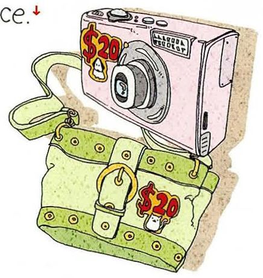
It was a real bargain — I got them for only 20 bucks apiece.
The statementIt was a real bargain — I got them for only 20 bucks apiece.
What to ask about课本脚注：bargain = 比正常价便宜很多的东西；buck = 美元（口语）；apiece = 每个。问单价用 how much。
Questions you can ask①How much were they? ②How much each? ③Where did you find such a bargain?
14
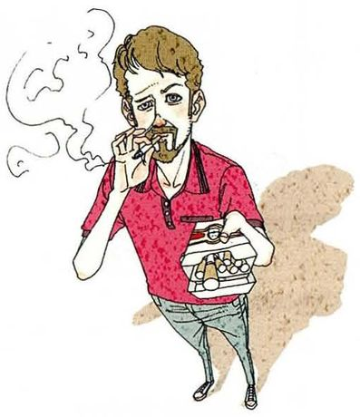
My friends who smoked looked cool to me and they "recommended" it to me.
The statementMy friends who smoked looked cool to me and they "recommended" it to me.
What to ask about课本脚注：cool = 极好的、一流的、时髦的。这是原因题 → 用 How come（陈述语序）或 How did you start。
Questions you can ask①How did you start smoking? ②How come you started? ③How do you feel about it now?
15
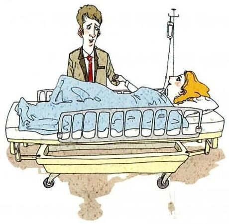
I feel much better!
The statementI feel much better!
What to ask about这是状态、感受 → 用 how do you feel。也可问恢复情况，用 how are you doing。
Questions you can ask①How do you feel now? ②How are you feeling today? ③How long were you in hospital?
How would you ask someone how their weekend was without using "how"?
"What did you get up to?" — that's the most natural one, and it's much friendlier than "how was your weekend", which people answer with one word. Or "Did you do anything nice?" which invites a story rather than a verdict.
invites a story rather than a verdict —— 精确指出了 how was your weekend 的问题：它只得到一个形容词。这种对比显示你真的在思考对话效果。
Which of these fifteen was hardest to turn into a "How" question?
The one about the hospital — "I feel much better". It's already a feeling, so asking "how do you feel" just repeats it. You have to ask about something else: how long were you in, how did it happen. With the others, the information in the sentence suggests the question. Here it doesn't.
指出「原句已经是答案本身」这个结构问题，比说「这题很难」有价值得多。而且它顺势给出了解法。
Why do learners mix up "how long" and "how often"?
Because both translate to the same thing in Chinese. "你多久打一次电话" is frequency and "你打电话打多久" is duration, and the difference is only in the little words — 一次 versus 多久. In English the distinction is built into the question word itself, so if you're translating from Chinese you have to make a decision that your own language didn't force you to make.
How long have you been teaching? And how do you usually plan a lesson — do you work from a textbook or start from what the student needs that week? I'm asking the second one because I've noticed the material gets adapted in the room, and I'd like to know how deliberate that is.
Not rude, but it's intimate — it sounds like you assume you're close enough to ask. Said to a stranger, "how come you're late" can land as an accusation, where "why were you late" is more neutral. So it's less about politeness levels and more about who you're allowed to be casual with.
区分「礼貌程度」和「关系距离」，是很精确的判断。who you're allowed to be casual with 这个说法本身就很地道。
How has asking questions in English changed the way you listen?
It's made me listen for the answer I can use. Before, I'd listen to understand and then have nothing to say. Now I'm listening for the number or the detail I could ask about — which sounds mercenary, but it means I actually follow the conversation instead of drifting.
承认这种改变「听起来有点功利」（sounds mercenary），反而更可信。而且它说清了 Part III 的真实目的：为了能提问，你必须更仔细地听。
07这节课最容易犯的错
这一课的错误集中在两处：How 后面的词选错，以及 how come 后面的倒装。
✗How long do you brush your teeth?（想问多久刷一次） ✓How often do you brush your teeth?
频率用 how often，时长用 how long。「三次一天」是频率，不是时长。这是本课头号错误。
✗How many money did you pay? ✓How much did you pay?
money 不可数，用 how much。第 13 题最容易错。
✗How come did you start smoking? ✓How come you started smoking?
how come 后面用陈述语序，不倒装。和第 16 课 I wonder if 是同一个坑。
✗How long you have been living in Korea? ✓How long have you been living in Korea?
have 要提到主语前面。现在完成进行时的问句结构：how long + have + 主语 + been doing。
✗How was your trip was? ✓How was your trip?
was 只能出现一次。这是把问句和陈述混在一起的典型错误。
✗How much books do you read a month? ✓How many books do you read a month?
books 可数，用 how many。
✗I celebrated my birthday very happy. ✓I had a really good birthday. / I celebrated at home with my family.
celebrate 后面接「怎么庆祝」，不接形容词。这一课的例句给的是具体做法，不是评价。
✗How do you get the car from your friend?（想问「怎么得到的」） ✓How did you get the car?
「得到」是已发生的事，用 did + 原形。用 do you get 会变成问「你通常怎么得到车」，意思变了。